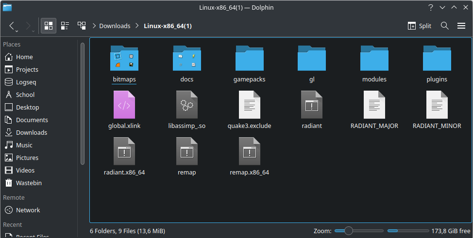
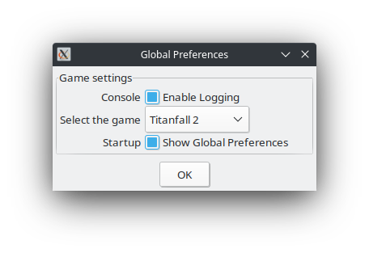

Installation
docs/installation
Last updated by F1F7Y on 2022-11-7
- Head over to the releases page and download the .zip file corresponding to your operating system.
-
Unzip the file and move the contents wherever you'd like.
The uzipped folder should contain simmilar files as show below:
( The contents may look slightly different based on your operating system )
- Run radiant
Running radiant for the first time
When running radiant for the first time it's important to know what the options in the popup below mean.
-
Select the game - The game you want to make a map for. Each game has its own resources folder.
You can change this in Edit>Preferences>Global>Game
-
Show Global Preferences - Enable / Disable whether this window should display when you launch radiant.
You can change this in Edit>Preferences>Global>Game